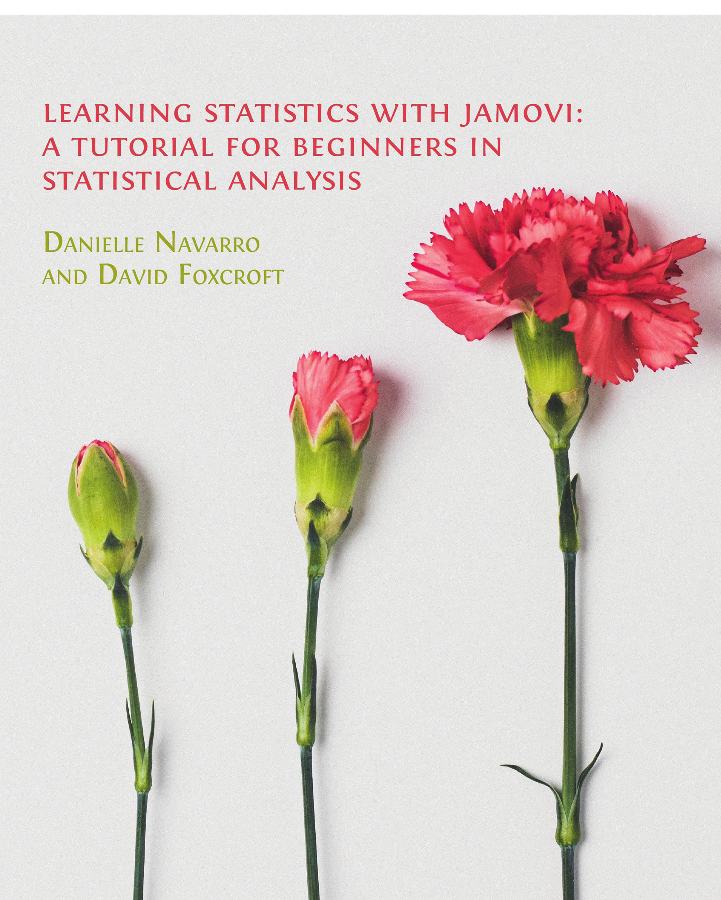

JAMOVI로 배우는 통계학
통계분석 초심자를 위한 지침서
역자 서문

이 책은 Danielle J. Navarro와 David R. Foxcroft가 지은 Learning Statistics with jamovi: A Tutorial for Beginners in Statistical Analysis (2025년 1월 1일 판)을 우리말로 번역한 것입니다.
역자는 R로 통계분석하는 과목을 여러 해 동안 강의하였습니다. R은 공개 SW로 자유롭게 사용할 수 있고 강력한 통계분석 도구이지만, 프로그래밍에 익숙하지 않은 학생들은 종종 초기 진입장벽을 느끼기도 합니다. 다양한 배경의 학생들에게 통계분석을 더 쉽게 강의할 수 있는 방법을 고민하던 차에, jamovi와 Danielle J. Navarro와 David R. Foxcroft의 책을 발견하게 되었습니다.
jamovi는 공개 SW이며 R을 기반으로 구현되었지만, SPSS 같이 그래픽 사용자 인터페이스를 채택하고 있어서 초심자가 비교적 쉽게 통계분석을 시작할 수 있습니다. 물론 통계분석의 다양한 기법과 옵션이 왜 필요하고, 복잡한 분석 결과를 어떻게 해석해야 하는지를 아는 것은 편리한 사용자 인터페이스와는 별개의 문제이고, 통계분석 과목에서 하나씩 배워나가야 할 쉽지 않은 내용들입니다. 그러나 일단 몇 번의 클릭만으로 통계분석 결과를 얻을 수 있다는 점은, 명령어 기반 통계분석 도구에 비해 초심자가 느끼는 심리적 진입장벽을 낮춰줍니다.
이 책은 심리학을 전공하는 학부생들을 위한 통계 입문서이지만, 심리학에 특화된 내용보다는 사회과학 전반에서 활용되는 통계분석의 이론과 실습을 다루고 있기 때문에 다른 사회과학 전공이나 경영학 등을 전공하는 학부생들을 위해 사용되어도 손색이 없습니다.
되도록이면 원문의 내용과 체계를 최대한 유지하여 번역하도록 노력하였습니다. 원문과 번역본이 크게 차이가 나는 부분은 세 가지 입니다. 첫째는, 원문에서는 각주로 처리된 수학적 설명의 일부분을 본문으로 옮겼습니다. 원문에서는 수학적 설명의 많은 부분을 각주로 처리하였습니다. 아마 수학 불안증을 가지는 독자들을 위한 배려일 거라 생각됩니다. 그러나 이런 부분 중 여러 내용이 수학적으로 그리 복잡하지 않았으며 본문의 다른 부분과 설명의 연관성이 높아서 각주가 아니라 본문에 있는 것이 오히려 이해하기 쉽다고 판단되었습니다. 이런 판단이 서는 곳은 각주를 모두 본문으로 처리하였습니다.
두 번째로 다른 점은, 독자들이 jamovi를 실습하거나 본문의 내용을 이해하는데 도움이 될 것이라 생각되는 내용이 있으면 tip 형태의 별도의 글상자로 이러한 내용을 추가하였습니다. 별도의 글상자로 처리한 이유는 원문과 역자가 추가한 내용을 독자들이 쉽게 구분할 수 있게 하기 위해서입니다.
원문의 내용이 아니라 역자가 이해를 돕기 위해서 추가한 내용은 이러한 형태의 tip 글상자로 구분하였습니다.
세 번째로, jamovi의 한글화가 아직 불완전 하여 jamovi의 한글 인터페이스의 용어가 부적절한 곳이 많습니다. 대표적으로 test의 번역어로 ’검정’이라고 하는 것이 적절한 곳에 ’검증’이라고 한 것입니다. 이런 경우들이나 어떤 통계학 용어의 한글 용어가 여러 개 있는 경우에 역자가 각주를 단 곳이 있습니다. 이런 경우에는 각주의 시작 부분에 <역주>라는 표시를 두어 원저자의 각주와 구분할 수 있도록 하였습니다.
이 책의 원본은 CC BY-SA 4.0 라이선스로 배포된 책입니다. 따라서 번역본인 이 책도 CC BY-SA 라이선스로 배포합니다. 이 책은 현재 번역 초안이라 할 수 있습니다. 이 책으로 강의를 하면서 더 매끄러운 번역이 될 수 있도록 문장이 조금씩 다듬어질 수 있으며, 새로운 실습이나 내용이 글상자로 추가될 수 있습니다.
번역의 오류를 발견하거나 제안 사항이 있다면 https://github.com/kilhwan/jamovi/issues로 알려주시기 바랍니다.
아무쪼록, 이 책이 통계분석의 이론과 실제의 세계에 입문하고자 하는 많은 분들에게 도움이 되기를 희망합니다.
상명대학교 경영공학과 김길환
2025년 2월 23일 초안 배포
원문 서문
이 교재는 심리학, 보건 또는 사회 과학 전공의 학부생을 대상으로 하는 통계학 입문 수업의 내용을 다룹니다. 이 책에서는 jamovi를 시작하는 방법과 데이터 조작에 대해 소개합니다. 통계적 관점에서 보자면, 이 책은 기술 통계와 그래프 작성부터 시작하여, 확률 이론, 표본 추출 및 추정, 귀무 가설 검정에 대한 장으로 이어집니다. 이론을 소개한 후에는 분할표 분석, 상관분석, t-검정, 회귀분석, ANOVA, 요인분석을 다룹니다. 책의 마지막 부분에서는 베이즈 통계에 대해서도 간략히 언급합니다.
이 책은 DJ Navarro(2018)의 Learning statistics with R: A tutorial for psychology students and other beginners (Version 0.6)를 각색한 것입니다. https://learningstatisticswithr.com/에서 원본을 확인할 수 있습니다.
이 책의 jamovi 버전은 2018년에 첫 번째 버전(0.65)으로 출시되었습니다. 이후 0.70 및 0.75 버전이 오류 수정 및 추가 내용과 함께 발표되었으며, 초기 버전의 변경 사항에 대한 세부 정보는 0.75 버전 서문에서 확인할 수 있습니다: https://github.com/user-attachments/files/18124061/learning-statistics-with-jamovi-0.75.pdf.
출시 이후 많은 사람들이 이 책의 인쇄본을 요청하였고, 이를 실현하면서 책과 자료의 오픈소스 특성을 유지하기 위해 영국 케임브리지의 Open Book Publishers와 협력하여 이 업데이트된 버전을 발간했습니다. Open Book Publishers는 영국에서 인문학 및 사회과학 분야의 학술 연구를 대상으로 한 선도적인 독립 오픈 액세스 출판사입니다. 이 출판사는 비영리, 수상 경력을 보유한, 학자들이 운영하는 기관으로, 고품질의 연구를 전 세계 독자들에게 무료로 제공하는 데 전념하고 있습니다.
이 책의 영문 PDF 버전은 Open Book Publishers 웹사이트 (https://www.openbookpublishers.com/books/10.11647/obp.0333)에서 무료로 다운로드할 수 있습니다. 필요한 모든 데이터 파일은 jamovi의 추가 모듈을 통해 무료로 접근할 수 있으며, https://www.learnstatswithjamovi.com에서도 다운로드할 수 있습니다.
오류를 발견하거나 제안 사항이 있다면 https://github.com/davidfoxcroft/lsj-book/issues로 알려주시기 바랍니다.
David Foxcroft
2025년 1월 1일
인용: Danielle J. Navarro와 David R. Foxcroft, Learning Statistics with jamovi: A Tutorial for Beginners in Statistical Analysis. 영국 케임브리지: Open Book Publishers, 2025, https://doi.org/10.11647/OBP.0333